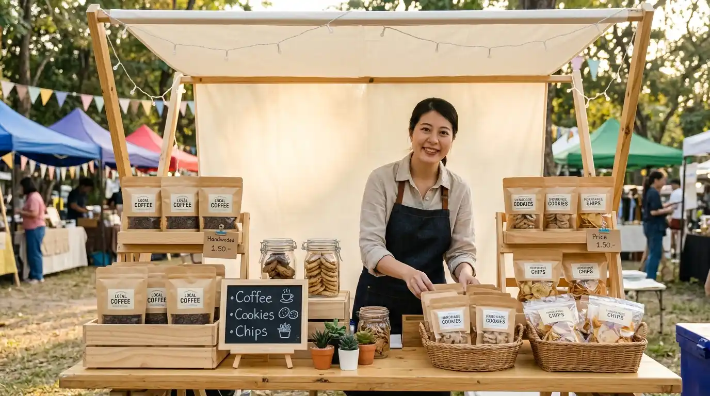

Dari Produk Lokal UMKM Malang Raya, Untuk Kemandirian Bersama
Inisiatif digital terpadu untuk menghubungkan pembeli dan penjual UMKM secara mandiri tanpa potongan komisi sepeser pun.

Cara Belanja Mudah
Pilih Produk
Klik Tombol WA
Sepakati Pembayaran & Kirim Langsung ke Penjual
Pusat FAQ
Seputar data, kemitraan, verifikasi, dan privasi kontak pedagang.
Apakah transaksi belanja lewat portal ini dikenakan biaya admin?
Sama sekali tidak. Anda bertransaksi langsung dengan pemilik usaha via WhatsApp, sehingga tidak ada potongan komisi atau biaya tambahan dari kami.
Bagaimana cara membayar dan menerima pesanan saya?
Seluruh metode pembayaran (transfer bank, QRIS, atau COD) dan pengiriman disepakati langsung antara Anda dan penjual di chat WhatsApp.
Apakah mendaftarkan usaha dipungut biaya?
Pendaftaran usaha di platform ini 100% gratis untuk mendukung pertumbuhan ekonomi pelaku usaha mikro di Malang Raya.
Bagaimana cara memastikan toko yang terdaftar bukan toko fiktif?
Setiap toko melewati validasi manual oleh tim kami untuk memastikan nomor WhatsApp aktif serta lokasi fisik usaha benar-benar berada di wilayah Malang Raya.
Laporkan Toko Fiktif atau Nomor Tidak Aktif
Bantu kami menjaga katalog tetap tepercaya. Kirim laporan ke lapor@umkmmalang.id atau WhatsApp Tim Admin.
Mari Bergerak Bersama Memajukan Produk Lokal Malang!
Dukung tetangga kita dengan mulai berbelanja di UMKM sekitar, atau daftarkan usahamu hari ini agar semakin berkembang.